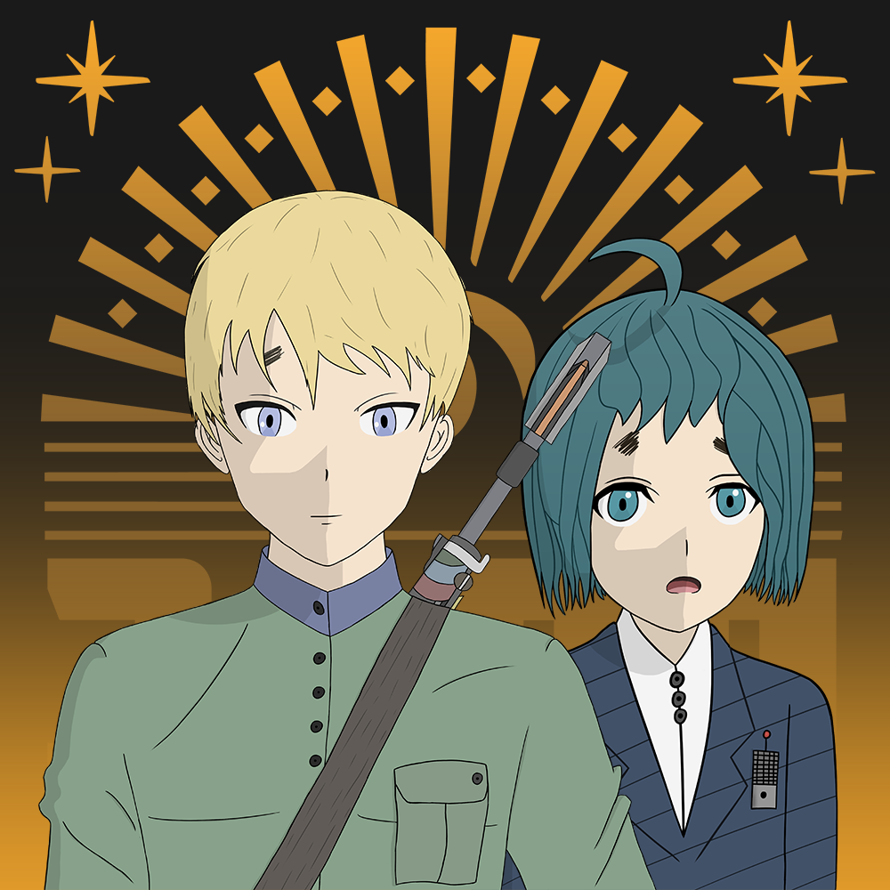

24.05.2026
Открыта первая сводка
Здесь будет полное описание новости: подробности разработки, новые материалы проекта, планы команды и важные изменения, которые не помещаются в короткую карточку ленты.
Такой формат удобен для больших публикаций. В ленте остается краткий анонс, а на этой странице можно разместить полный текст, дополнительные изображения и подробные заметки.
Позже этот текст можно заменить на реальную статью о ходе разработки, обновлениях мира, персонажах, механиках или любых других материалах проекта.